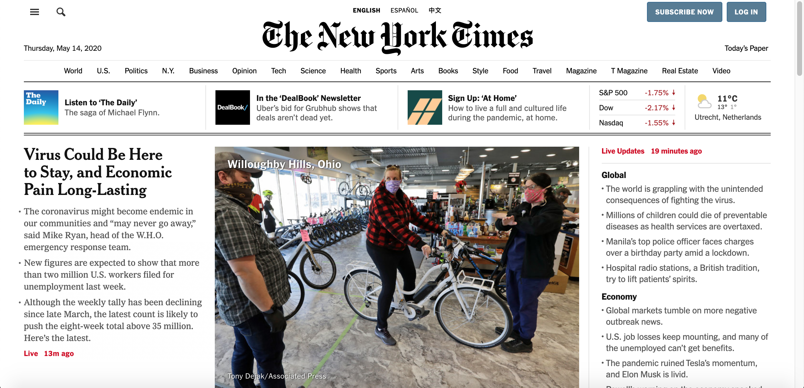

Semantic HTML and why you should stop using div tags
Irresponsible use of div tags
Using div tags is still commonly used in web development. You would see a lot of websites that have a lot of div tags in their structure. Developers are using the div tags to give an element on a web page style or make their code more structural. (here photo of an example)
In all cases when using div tags your code will still work, but is this the best practice? Using div for almost all your HTML structure will lead you to problems, Problems such as:
- Accessibility -- There are many a11y tools (tools that can test the accessibility of any web applications and produce detailed reports). To guide and help users navigate through a web application. The one that is doing the testing process is a robot. In the case of using div tags, div’s don’t really give a structure to the web page. And while usability testing, the testing robots can’t understand what you mean by the class of ID name that you gave to a div tag. And that would mess with the HTML structure of a web page. Leading to a difficulty in navigating the web application.
- Readability -- Reading a code that has a lot of div tags in it, could be a nightmare to developers. When reading a large document, you will have to look carefully for the class names div class=”...” , so that you can understand what each div tag means. While going through the code reading it, at some point it will be difficult to keep track of which opening div tag goes with which closing div tag.
- Consistency and standards -- Working on a new project, would be much easier if all developers had a standard way to write the structure of the HTML files. That would be more consistent and will be more work efficient and less time consuming. You will not have to spend hundreds of hours trying to understand what the other developer meant.
div tags can be tempting to use, you are used to them. But something better is here, a better standard for web development, HTML5. So be open up to new things and “kill your darlings”.
HTML5 standards
Every newspaper article has a structure that is not very different from other articles. It is clear what there is a title, a main text and a footer, inside the main text you could also have different sections. And just like in editorial design (such as books, magazines, newspapers, etc). Web applications should also have a standard structure. And that structure was introduced in HTML5.
HTML5 introduced a set of semantic elements that can help with building a better structure for HTML files. Giving your document a structure in a more meaningful way. Using this structure in a HTML file, will help clarify what each element means and what is their purpose in that HTML file. Moreover this standard structure will improve the readability of the code for both humans and robots.
So keep in mind that “the div element should be used only when no other semantic element (such as article or nav) is appropriate”.
HTML5 for structuring content
I have divided the semantic HTML5 elements into two categories. Primary file structure and secondary content structure.
-
The primary structure of a HTML file would contain a header, main, and footer. Just like a newspaper. So let's talk about those elements a bit more.
Headers and footers are basically the same thing but have a different structural purpose. Headers go at the beginning and footers at the end. They are designed to be used not only inside the body, but also in every chunk of elements that have a clear beginning and end. Such as artikels, sections and forms.
The main element is used for content that is unique to a page. The best practice is to use main only once per page, and put it directly inside body. Ideally this should not be nested within other elements.
The aside and nav elements could also be seen as primary file structure elements. But I always start with the header, main and footer and then nest more elements inside those. That is the way that I'm used to work, and besides not all websites need an aside.
-
Secondary content structure, I will start here by explaining when to use nav and aside. Note, that those are by no mean all the semantic elements of HTML5. In this article I will discuss some of those elements.
nav contains the main navigation functionality for the page. Secondary links, etc., would not go in the navigation. That is why it is also considered as a primary element.
aside contains content that is not directly related to the main content but can provide additional information indirectly related to it (glossary entries, author biography, related links, etc.).
article encloses a block of related content that makes sense on its own without the rest of the page (e.g., a single blog post). Within each article you can also have a header and a footer, a h1, …, h6 element, an img, etc..
section is similar to article, but it is more for grouping together a single part of the page that constitutes one single piece of functionality (e.g., a mini map, or a set of article headlines and summaries). It's considered best practice to begin each section with a heading; also note that you can break article up into different section, or section up into different article , depending on the context.
Conclusion
Why is using semantic HTML the best option? From what I disgust apove. Learning to code in a semantic way will improve the readability of your code. You will no longer have to use class and ID names, every element has now its own name that describes what its purpose is. Your code will be more accessible for both humans and robots. And the work of developers will be more consistent. And as we all know consistency matters and it is not only inted for design but also for development. Using only div in your HTML structure is like choosing a road that seems shorter but has a lot of obstacles in the way. So make sure to put more time in choosing the right elements for your content, to have a good structure that has no obstacles or problems.